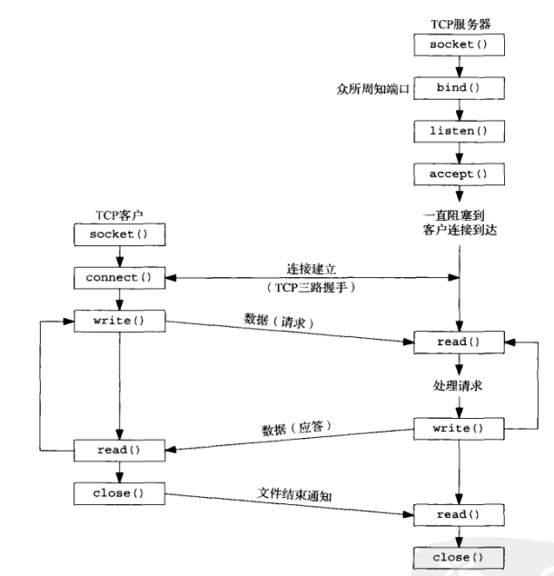
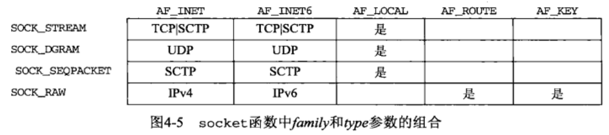
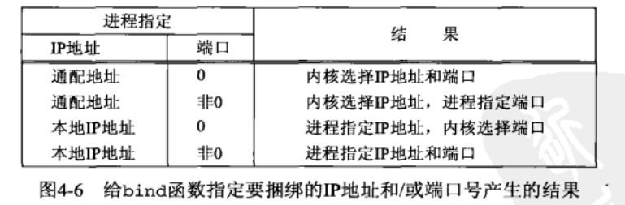
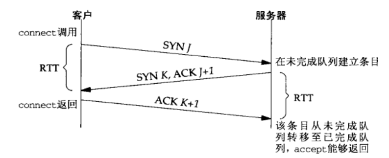

[UNP]:套接字编程基本API
套接字函数事件表

1. socket()
socket()用于创建新的套接字
socket()
1
2
3
4#include<sys/socket.h>
int socket(int family, int type, int protocol);
// 返回：成功返回套接字描述符，失败-1family
family为地址族，可选值如下
family 说明 AF_INET IPv4协议 AF_INT6 IPv6协议 AF_LOCAL Unix域协议 AF_ROUTE 路由套接字 AF_KEY 秘钥套接字 type
指明套接字的类型，可选值如下
type 说明 SOCK_STREAM 字节流套接字 SOCK_DGRAM 数据报套接字 SOCK_SEQPACKET 有序分组套接字 SOCK_RAM 原始套接字 protocol
protocol参数可以设置为0，以表示family,type经过组合产生产生的默认值,family与type组合产生的protocol默认值如下
“是”表明这样搭配也是有效的，但是没有合适的缩略语
也可以手动设置
protocol 说明 IPPROTO_TCP TCP传输协议 IPPROTO_UDP UDP传输协议 IPPROTO_SCTP SCTP传输协议
2. connect()
connect()函数用于建立与服务器的连接
connect()
1
2
3
4#include <sys/socket.h>
int connect(int sockfd, const struct sockaddr *servaddr,socklen_t addrlen);
// 返回：成功 0，失败 -1sockfd
本地套接字描述符
servaddr
服务器套接字结构
addrlen
调节子结构大小
注意点
- 调用connect函数触发三路握手，仅在连接建立成功或出错时才返回，出错返回有以下情况：
- TCP客户端没有收到SYN分节的响应，返回 ETIMEDOUT 错误(在多次尝试失败后)；
- TCP客户端收到的 SYN 响应是 RST，立即返回 ETIMEDOUT 错误(硬错误，表明服务器主机在指定的端口上没有进程等待连接)
- TCP客户端发出的 SYN 在中间的路由上引发 “destination unreachable” ICMP错误(软错误)，客户机会将 ICMP 错误信息保存在本地，继续尝试重发，若一段时间之后人体没有收到响应，那么就把保存的错误信息作为EHOSTTUNREACH或者ENETUNREACH 错误返回给进程
- 产生 RST 错误分节的条件:
- SYN 到达目的，但指定的端口没有进程
- TCP 取消一个已有连接
- TCP 接收到一个不存在的连接的分节
- 若 connect 失败，则该套接字不能用，必须 close，再重新调用 socket 创建新的套接字
- 调用connect函数触发三路握手，仅在连接建立成功或出错时才返回，出错返回有以下情况：
3. bind()
bind()将一个本地协议地址({IP地址, 端口号})与一个通过socket()产生的套接字绑定
bind()
1
2
3
4#include <sys/socket.h>
int bind(int sockfd,const struct sockaddr *myaddr, socklen_t addrlen);
// 返回：成功0 失败 -1sockfd
本地套接字
myaddr
本地套接字结构
addrlen
套接字结构大小
注意点
端口号
bind()基本上只由服务器调用，服务器在启动时需要绑定他们众所周知的端口，如果没有调用bind()的话，当调用connect()(客户机)或listen()(服务器)时，系统就会为套接字分配一个临时的端口号对于客户端来说，分配临时端口号没有什么问题，所以客户端基本不调用
bind(), 而服务器是通过众所周知的端口号被认识的，必须调用bind()IP地址
- 对于服务器而言，使用
bind()将套接字与指定IP绑定之后，意味着该套接字只接受目的地址为该IP地址的分节 - 当发送分节的时候，内核会根据分节到达服务器的路径来自动选择IP地址
- 如果TCP服务器没有使用
bind()将套接字与指定IP绑定，那么服务器就会将客户发送的SYN的目的地址作为服务器的源IP地址
- 对于服务器而言，使用
默认套接字

如果指定端口号为0, 那么
bind()时选择的仍然是一个临时端口号，如果IP地址为通配地址INADDR_ANT, 那么同样有内核对IP地址进行选择
4. listen()
listen()函数用于监听指定套接字
主动套接字与被动套接字
- 当socket创建一个套接字的时候，它被假定为一个主动套接字，即系统认为它即将调用
connect()与其它主机建立连接 listen()函数会将其转变为被动套接字，指示内核应该接受指向该套接字的连接请求
listen()
1
2
3
4#include <sys/socket.h>
int listen(int sockfd, int backlog);
// 返回：成功 0 失败 -1sockfd
指定套接字
backlog
内核应该为相应套接字排队的最大连接个数
backlog参数解释
内核为任意一个监听套接字维护两个队列
未完成连接队列
当套接字接受到一个SYN, 并且发出[SYN +ACK] 报文之后，内核就会将该连接加入未完成连接队列，此时套接字位于SYN_RCVD状态
已完成连接队列
对于每个已经完成了TCP三路握手的连接，内核会将他们加入以完成连接队列，此时套接字处于ESTABLISHED状态
图例

如上图所示，**
backlog参数就是用来限定这两个队列套接字的总和**
实际上，上述解释也不一定对，因为各家实现是不同的
5. accept()
accept()调用会从已完成连接队头返回下一个已完成连接，如果已完成队列为空，那么进程会被置为睡眠状态(或阻塞)
accpet()
1
2
3
4#include <sys/socket.h>
int accept(int sockfd, struct sockaddr *cliaddr, socklen_t *addrlen);
// 返回：成功 返回已连接套接字， 出错 -1sockfd
监听套接字，
accept()会从该套接字对应的已完成队列中获取连接childaddr
返回已连接的客户的协议地址
addrlen
是一个值-结果类型参数，传入时代表childaddr的大小，传出时代表写入的字节大小
监听套接字与已连接套接字
- 当使用
listen()监听一个套接字之后，该套接字就被称为监听套接字(被动套接字), 一个监听套接字在服务器声明周期内一直存在 accept()返回的是一个新的套接字，被称为已连接套接字，当服务器完成与某个客户的连接之后，相应的已连接套接字就被关闭
accept()的返回时机

- 当连接建立完成，即服务器接收到最后一个ACK时，accept()从睡眠(阻塞)中返回
6. close()
close()用于关闭一个套接字, 就和关闭一个普通文件一样
close()
1
2
3
4#include <unistd.h>
int close(int sockfd);
// 返回： 成功 0，失败 -1sockfd
指定套接字
注意点
- 调用close 套接字描述符引用计数减 1，若减 1 后引用计数为 0 ，发送 FIN 开启 TCP 连接终止过程
- 立即结束 TCP 连接，使用 shutdown 函数
- 并发服务器编程时，父进程必须关闭已连接描述符，否则导致套接字描述符总是大于 1， 连接不会被真正终止，并可能耗尽可用描述符
7. getsockname(), getpeername()
getsockname() 返回与该套接字关联的本地协议地址getpeername() 返回与该套接字关联的外地协议地址
1 | |
sockfd
给定套接字，已连接套接字或者监听套接字都可以
addr
返回结果
addrlen
值-结果类型参数，传入指明addr大小，传出指明写入大小
本博客所有文章除特别声明外，均采用 CC BY-SA 4.0 协议 ，转载请注明出处！